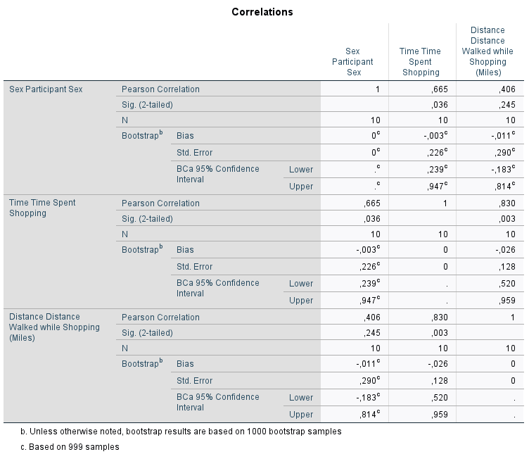

| Tag | Value |
|---|---|
| file | Inferential_Statistics_vufsw-confidence_intervals-1339-nl_vufsw-confidence_intervals-1339-nl |
| name | vufsw-confidence intervals-1339-nl |
| section | inferential statistics/confidence intervals |
| type | schoice |
| solution | TRUE, FALSE, FALSE, FALSE |
| Type | interpreting output |
| Program | NA |
| Language | dutch |
| Level | statistical literacy |
In Field staat een voorbeeld beschreven van een niet-wetenschappelijk onderzoek door een winkelketen voor een artikel in het tijdschrift Marie Claire: “shoppen is gezond”. Vrouwen zouden tijdens het winkelen gemiddeld langere tijd lopen en meer kilometers maken dan mannen, waardoor ze ook meer calorieën verbranden. Hieronder staat een correlatiematrix over het verband tussen afstand (Distance: in kilometers), de tijd besteed aan winkelen (Time: in minuten) en sekse (Sex: 0 = man; 1 = vrouw) van de (door Field gesimuleerde) gegevens.

Zijn, op grond van de bovenstaande betrouwbaarheidsintervallen, de
volgende beweringen over de populatie aannemelijk?
1: Vrouwen besteden meer tijd aan winkelen dan mannen
2: Vrouwen maken tijdens het winkelen meer kilometers dan mannen